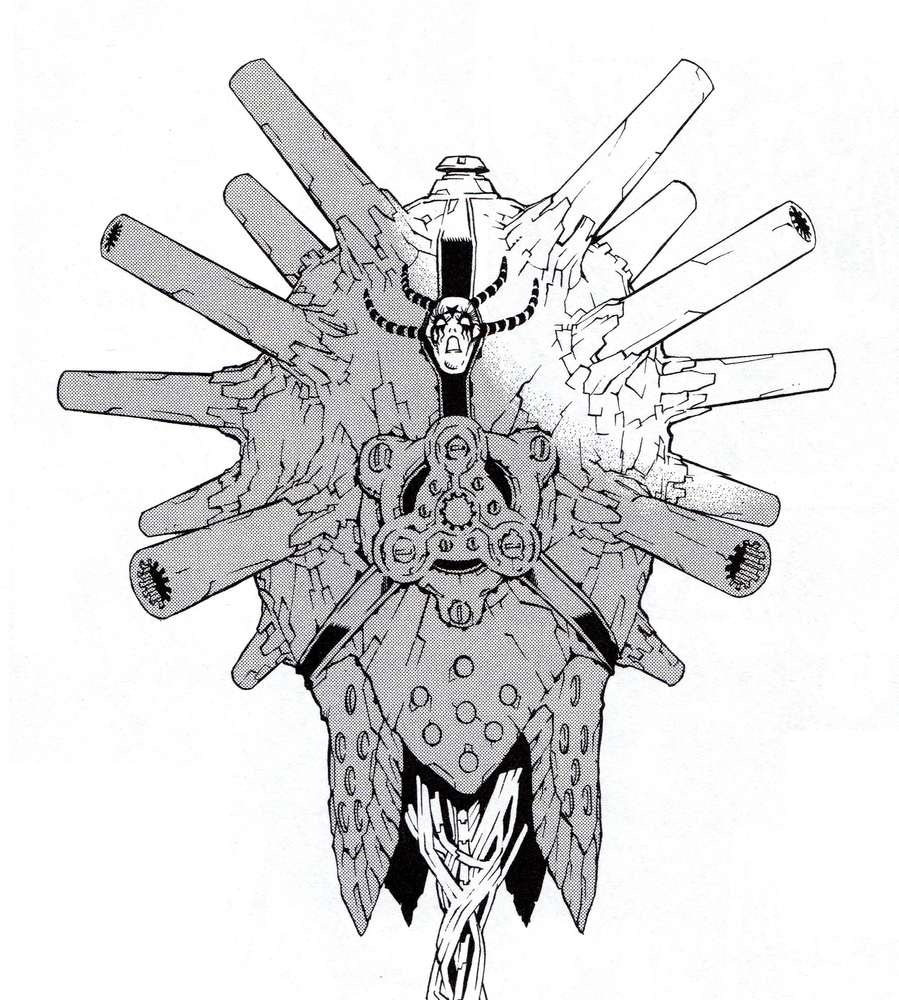
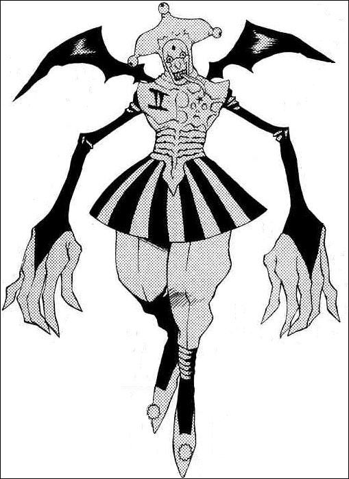
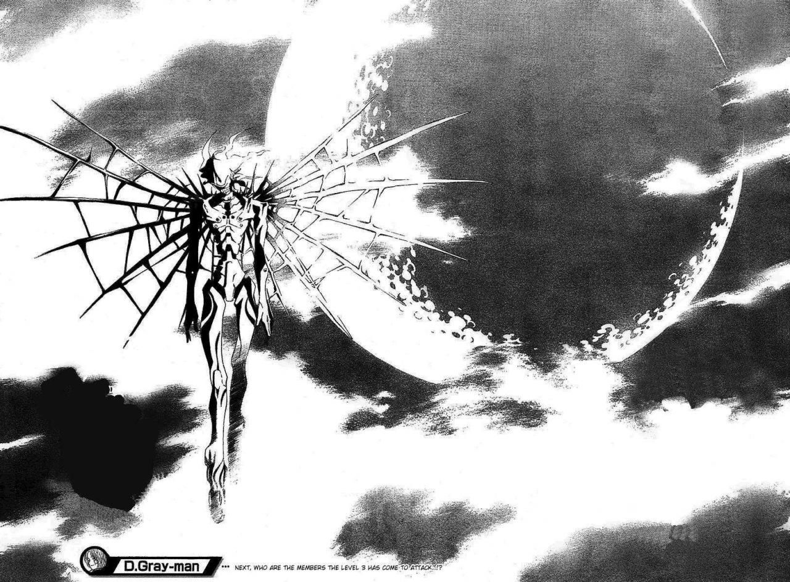
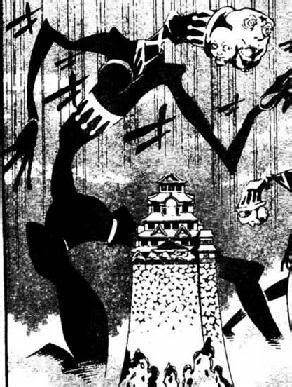
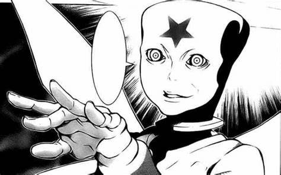

The Akuma (アクマ; Literally meaning "Evil Demon" or "Devil") are artificial creatures comprised of one or more human souls, metal skeletons and Dark Matter, the latter two supplied by the Earl of Millennium. By design, they are forced to obey the orders of the Earl and the other members of the Noah Family without question, even if it is against their will. However, they have been known to go behind the Clan's backs on occasions when they are unsupervised.
They are 5 different types of Akuma:
Level 1 Akuma Level 2 Akuma Level 3 Akuma Giant Akuma Level 4 Akuma
Level 1 (レベル 1, Reberu 1) consists of a floating ball shaped creature with dozens of gun barrels protruding from it that fire large bullets. The gun barrels are flexible and can be bent to face any desired angle without affecting its firing capabilities.

Level 2 (レベル 2, Reberu 2) produces a dramatic change. They develop a unique ability and a sense of self. Level 2 Akuma are capable of intelligence and are largely independent, though they still maintain absolute loyalty to the Millennium Earl and the Clan of Noah

Level 3 (レベル 3, Reberu 3) brings perhaps the most terrifying changes of any previous stage. Regardless of their appearance in Level 2, all Level 3 Akuma become bipedal, roughly 8 to 9 feet tall, with sharp jagged teeth, and wear what looks like medieval armor that covers most of their bodies.

During the fight at Edo, The Earl revealed that a mass number of Level 3s can fuse together to create Giant Akuma. Due to their gigantic size they are slow but have long arms and legs to attack directly but their movement is awkward and easy to dodge if paying attention.

Level 4 (レベル 4, Reberu 4) is the most powerful and destructive Akuma known to the Exorcists so far, surpassing even the strength of a point breaker exorcist.